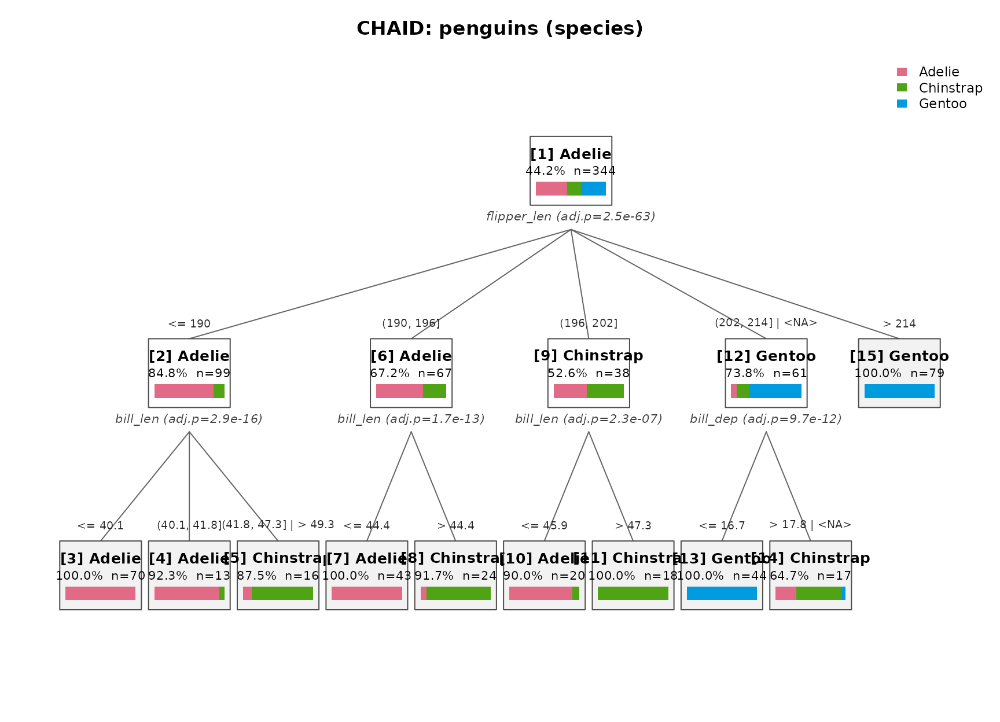
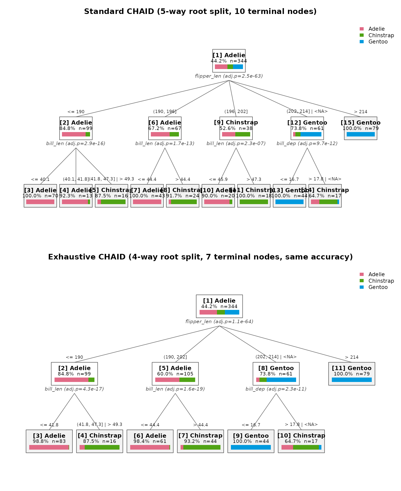
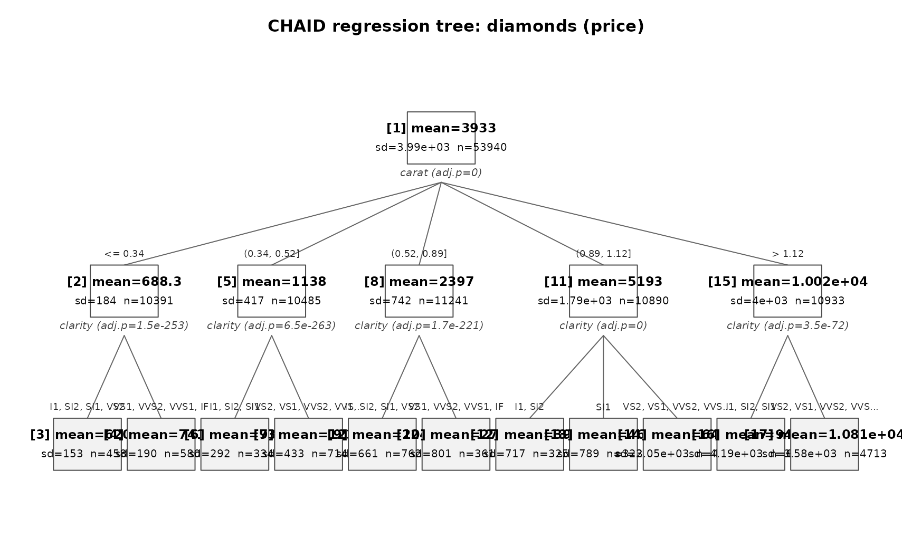
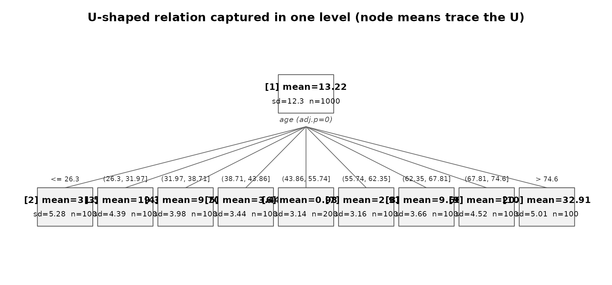
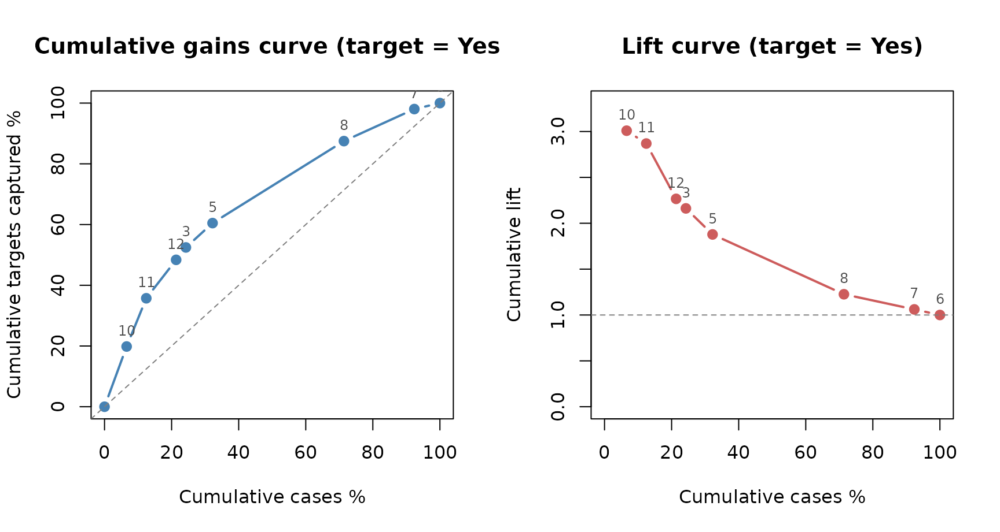
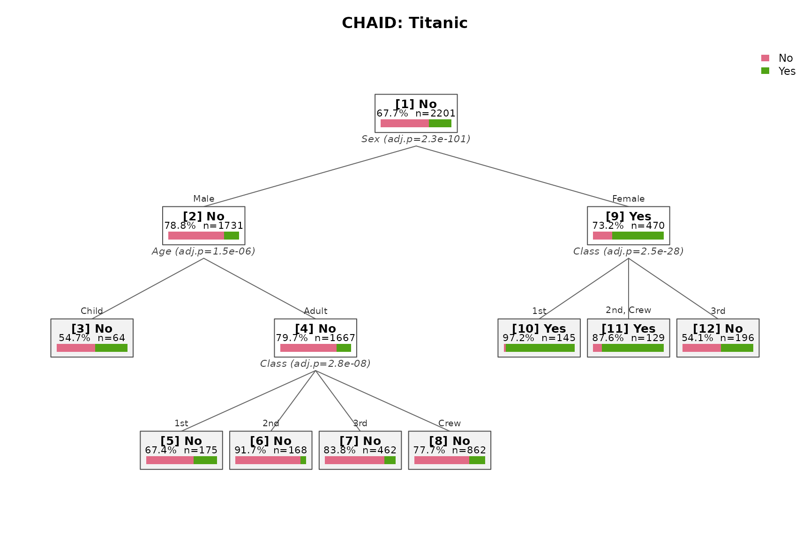
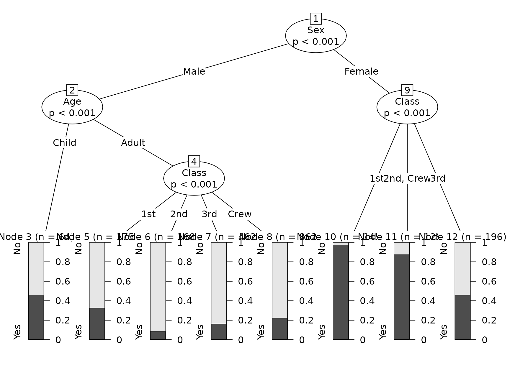
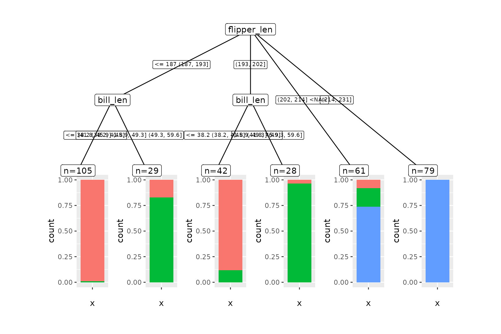
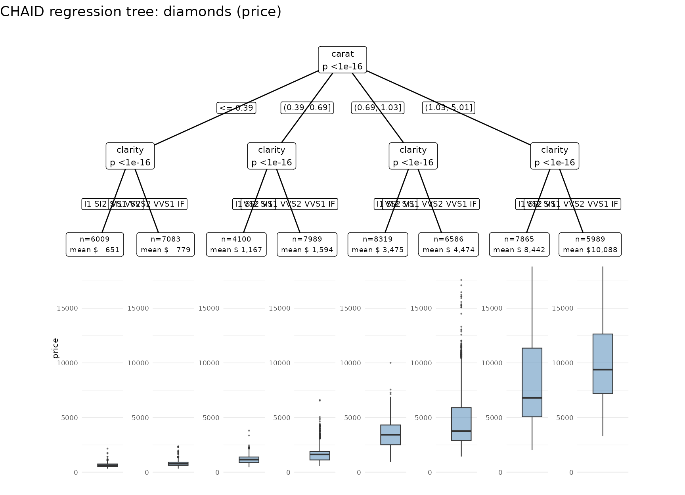

SPSS 準拠の CHAID（Chi-squared Automatic Interaction Detection）決定木の R 実装。 base R のみで動作し、SPSS の既定挙動を再現しつつ、多重比較補正の拡張や partykit 連携などのオプションを備える。本書のコードは knit 時に毎回実行される。
英語の入門編は vignette("chaidr") を参照。
1. クイックスタート
base R 同梱の penguins（欠損値を自然に含む。R 4.5
以降に同梱）を使う。
library(chaidr)
data(penguins)
fit <- chaid(species ~ ., data = penguins,
control = chaid_control(min_parent = 30, min_child = 10))
print(fit)
#> CHAID decision tree (method = "chaid")
#> Response: species (categorical)
#> Valid cases: 344 (data: 344 rows)
#>
#> [1] root: Adelie (44.2%), n=344 | split: flipper_len (adj.p=2.48e-63, chi2=328.5, B=714)
#> [2] flipper_len in {<= 190}: Adelie (84.8%), n=99 | split: bill_len (adj.p=2.92e-16, chi2=78.21, B=28)
#> [3] bill_len in {<= 40.1}: Adelie (100.0%), n=70 *
#> [4] bill_len in {(40.1, 41.8]}: Adelie (92.3%), n=13 *
#> [5] bill_len in {(41.8, 47.3] | > 49.3}: Chinstrap (87.5%), n=16 *
#> [6] flipper_len in {(190, 196]}: Adelie (67.2%), n=67 | split: bill_len (adj.p=1.66e-13, chi2=58.69, B=9)
#> [7] bill_len in {<= 44.4}: Adelie (100.0%), n=43 *
#> [8] bill_len in {> 44.4}: Chinstrap (91.7%), n=24 *
#> [9] flipper_len in {(196, 202]}: Chinstrap (52.6%), n=38 | split: bill_len (adj.p=2.31e-07, chi2=30.78, B=8)
#> [10] bill_len in {<= 45.9}: Adelie (90.0%), n=20 *
#> [11] bill_len in {> 47.3}: Chinstrap (100.0%), n=18 *
#> [12] flipper_len in {(202, 214] | <NA>}: Gentoo (73.8%), n=61 | split: bill_dep (adj.p=9.69e-12, chi2=56.14, B=15)
#> [13] bill_dep in {<= 16.7}: Gentoo (100.0%), n=44 *
#> [14] bill_dep in {> 17.8 | <NA>}: Chinstrap (64.7%), n=17 *
#> [15] flipper_len in {> 214}: Gentoo (100.0%), n=79 *連続変数 flipper_len
が自動で10分位ビンに離散化され、類似ビンが統合されて
多岐分岐の木になっている。*
は末端ノード。<NA> を含むグループは、 欠損値が
Floating
カテゴリとして最も類似したビンへ自動統合されたことを示す（§4.4）。
同じ木は plot()
で可視化できる（ノード内の帯はクラス分布。詳細は §5.1）。
plot(fit, main = "CHAID: penguins (species)")
予測は S3 の predict で行う。
pred <- predict(fit, penguins) # クラス予測（factor）
mean(pred == penguins$species) # 訓練データ精度
#> [1] 0.9622093
round(predict(fit, head(penguins, 3), type = "prob"), 3) # クラス確率
#> Adelie Chinstrap Gentoo
#> [1,] 1 0 0
#> [2,] 1 0 0
#> [3,] 1 0 0summary()
は木に加えて設定と停止理由の内訳を表示する。
summary(fit)
#> CHAID decision tree (method = "chaid")
#> Response: species (categorical)
#> Valid cases: 344 (data: 344 rows)
#>
#> [1] root: Adelie (44.2%), n=344 | split: flipper_len (adj.p=2.48e-63, chi2=328.5, B=714)
#> [2] flipper_len in {<= 190}: Adelie (84.8%), n=99 | split: bill_len (adj.p=2.92e-16, chi2=78.21, B=28)
#> [3] bill_len in {<= 40.1}: Adelie (100.0%), n=70 *
#> [4] bill_len in {(40.1, 41.8]}: Adelie (92.3%), n=13 *
#> [5] bill_len in {(41.8, 47.3] | > 49.3}: Chinstrap (87.5%), n=16 *
#> [6] flipper_len in {(190, 196]}: Adelie (67.2%), n=67 | split: bill_len (adj.p=1.66e-13, chi2=58.69, B=9)
#> [7] bill_len in {<= 44.4}: Adelie (100.0%), n=43 *
#> [8] bill_len in {> 44.4}: Chinstrap (91.7%), n=24 *
#> [9] flipper_len in {(196, 202]}: Chinstrap (52.6%), n=38 | split: bill_len (adj.p=2.31e-07, chi2=30.78, B=8)
#> [10] bill_len in {<= 45.9}: Adelie (90.0%), n=20 *
#> [11] bill_len in {> 47.3}: Chinstrap (100.0%), n=18 *
#> [12] flipper_len in {(202, 214] | <NA>}: Gentoo (73.8%), n=61 | split: bill_dep (adj.p=9.69e-12, chi2=56.14, B=15)
#> [13] bill_dep in {<= 16.7}: Gentoo (100.0%), n=44 *
#> [14] bill_dep in {> 17.8 | <NA>}: Chinstrap (64.7%), n=17 *
#> [15] flipper_len in {> 214}: Gentoo (100.0%), n=79 *
#>
#> Settings: alpha_merge=0.05, alpha_split=0.05, bonferroni=TRUE, adjust_across=none, max_depth=3, min_parent=30, min_child=10, n_bins=10
#>
#> Risk estimate (training data): 0.0378 (misclassification rate)
#>
#> Terminal nodes: 10
#> Stopping reasons:
#> min_parent: 5
#> pure: 52. アルゴリズムの概要
CHAID は各ノードで結合 → 分割 → 停止判定を繰り返す。数式・手順は IBM SPSS Statistics Algorithms（TREE-CHAID）に準拠。
前処理（連続予測変数の離散化）:
木構築前に重み付き累積相対周波数で最大10分位ビン
（n_bins）へ離散化し、以後は順序カテゴリとして扱う。同一値への度数集中（>1/k）や
ユニーク値不足があるとビン数は自動縮小する。
結合（Merging）: 目的変数との関連が薄いカテゴリ同士を統合する。
- 標準 CHAID（Kass 1980）: ペア p
値（順序型は隣接のみ、名義型は全ペア）の最大が
alpha_mergeを超える限り統合する貪欲法 - Exhaustive CHAID（Biggs et al. 1991）: 2カテゴリまで強制統合を続け、 全履歴から p 値最小の構成を選ぶ全探索型
検定は目的変数の型で自動選択される。
| 目的変数 | 検定 | 統計量・自由度 |
|---|---|---|
| factor（名義） | Pearson χ²（既定）または尤度比 G² | χ², (r−1)(c−1) |
| ordered（順序） | Goodman row effects model の尤度比検定 | H², I−1（§4.9） |
| numeric（連続） | 一元配置 ANOVA F | F, (I−1, N_f−I) |
分割と Bonferroni 調整: Adjusted p = min(1, B × p)
が最小の変数で分割 （alpha_split 超なら末端化）。乗数
B:
| 予測変数型 | 標準 CHAID | Exhaustive CHAID |
|---|---|---|
| 順序型 | C(I−1, r−1) | I(I−1)/2 |
| 名義型 | 第2種スターリング数 S(I, r) | I(I²−1)/2（spss）/ I(I²−1)/6（biggs） |
| 順序＋欠損（Floating） | C(I−2, r−2) + r·C(I−2, r−1) | I(I−1)/2 |
停止規則: 純粋ノード / 全予測変数一定 /
max_depth / min_parent / p
値非有意。分割成立後、min_child
未満の子は最類似の子へ統合。
3. API リファレンス
3.1
chaid(formula, data, weights, freq, method, control)
| 引数 | 説明 |
|---|---|
formula |
目的変数 ~ 予測変数 形式。. 可 |
data |
データフレーム |
weights |
ケース重み（期待度数の推定に反映。欠損/0/負のケースは除外） |
freq |
頻度重み（観測度数・自由度・ノードサイズを決める。整数へ丸め） |
method |
"chaid"（既定）または "exhaustive"
|
control |
chaid_control() の返り値 |
costs |
誤分類コスト行列 C[truth, pred]（§4.8） |
y_scores |
順序型目的変数のクラススコア（§4.9） |
予測変数の型と扱い:
| 型 | 扱い | 欠損値 |
|---|---|---|
| numeric | 自動ビン分割 → 順序型 | Floating カテゴリ |
| ordered | 順序型（隣接のみ結合可） | Floating カテゴリ |
| factor | 名義型（全ペア結合可） | 通常カテゴリ <NA>
|
3.2 chaid_control() — 全パラメータ
既定値は SPSS UI の既定に一致する。
| パラメータ | 既定 | 説明 |
|---|---|---|
alpha_merge |
0.05 | 結合の閾値。ペア p 値がこれを超えると統合 |
alpha_split |
0.05 | 分割の閾値。調整済み p 値がこれ以下なら分割 |
alpha_split_merge |
0.05 | resplit 用の閾値 |
resplit |
FALSE | 複合カテゴリの再分割（SPSS 既定オフ） |
bonferroni |
TRUE | Bonferroni 調整の有無 |
stat |
“pearson” | χ² の種類（“pearson” / “lr”） |
exhaustive_adjust |
“spss” | Exhaustive の名義型乗数（“spss” / “biggs”） |
max_depth |
3 | 最大深さ |
min_parent |
100 | 分割対象ノードの最小ケース数（頻度重み基準） |
min_child |
50 | 子ノードの最小ケース数 |
min_segment |
NULL | 結合フェーズの小カテゴリ吸収閾値（任意） |
n_bins |
10 | 連続変数の目標ビン数 |
epsilon, max_iter
|
1e-3, 100 | 重み付き期待度数（IPF）の収束条件 |
adjust_across |
“none” | 予測変数間の多重比較補正（§4.5） |
3.3 S3 メソッド
print(fit); summary(fit)
predict(fit, newdata, type = "response") # 予測値（factor / numeric）
predict(fit, newdata, type = "prob") # クラス確率（分類木のみ）
predict(fit, newdata, type = "node") # 末端ノード id
plot(fit) # base graphics の木プロット
chaid_table(fit, target = NULL) # ノード要約テーブル（§4.7）
chaid_rules(fit, format = "text|sql|r") # ルール抽出（§4.7）
chaid_importance(fit) # 変数重要度（§4.7）
chaid_gains(fit, target = ...) # ゲイン・リフト表 + plot（§4.7）
chaid_validate(fit, newdata) # 安定性評価（§4.7）予測時の未知データ:
学習時に無い因子水準は最大ノードの子へ（警告つき）、
範囲外の数値は端のビンへ、欠損は <NA>
カテゴリを含むグループへ。
4. 応用機能
4.1 標準 CHAID と Exhaustive CHAID の比較
機構の違い
両者が異なるのは結合フェーズの打ち切り方だけで、分割・停止の枠組みは共通。
標準 CHAID（Kass
1980）は貪欲法で早期停止する。許容ペアの中で最も似ている （p
値が最大の）ペアを探し、その p 値が alpha_merge
を超えている間だけ統合を繰り返す。
全ペアが有意になった時点で止まる。1本道を進むので速いが、途中の統合が最適でなかった
場合に取り返せない（局所解）。
Exhaustive CHAID（Biggs et al. 1991）は
alpha_merge を無視し、
カテゴリ数が2になるまで統合を続ける。初期構成から2グループまでの全履歴を保存し、
その中で未調整 p
値が最小の構成を事後的に選ぶため、局所解を回避できる。
重要な精密化として、構成の選択に Bonferroni 乗数 B
は使われない。標準は alpha_merge
との比較で、Exhaustive は未調整 p 値の最小化で構成を決める。 B
が効くのはその後の「どの予測変数で分割するか」の競争と
alpha_split の判定であり、
ここに両者の重要な差が現れる（後述）。
実例1: Titanic — Exhaustive が細かい構造を見つける
女性側の Class 分割に注目 — 標準は3分岐で止まるが、Exhaustive は最有意の2分岐を選び その下でさらに分割する。
tit <- as.data.frame(Titanic)
fit_std <- chaid(Survived ~ Class + Sex + Age, data = tit, freq = tit$Freq)
print(fit_std)
#> CHAID decision tree (method = "chaid")
#> Response: Survived (categorical)
#> Valid cases: 2201 (data: 24 rows, dropped: 8 rows)
#>
#> [1] root: No (67.7%), n=2201 | split: Sex (adj.p=2.3e-101, chi2=456.9, B=1)
#> [2] Sex in {Male}: No (78.8%), n=1731 | split: Age (adj.p=1.52e-06, chi2=23.12, B=1)
#> [3] Age in {Child}: No (54.7%), n=64 *
#> [4] Age in {Adult}: No (79.7%), n=1667 | split: Class (adj.p=2.84e-08, chi2=37.99, B=1)
#> [5] Class in {1st}: No (67.4%), n=175 *
#> [6] Class in {2nd}: No (91.7%), n=168 *
#> [7] Class in {3rd}: No (83.8%), n=462 *
#> [8] Class in {Crew}: No (77.7%), n=862 *
#> [9] Sex in {Female}: Yes (73.2%), n=470 | split: Class (adj.p=2.51e-28, chi2=130.7, B=6)
#> [10] Class in {1st}: Yes (97.2%), n=145 *
#> [11] Class in {2nd, Crew}: Yes (87.6%), n=129 *
#> [12] Class in {3rd}: No (54.1%), n=196 *
fit_ex <- chaid(Survived ~ Class + Sex + Age, data = tit, freq = tit$Freq,
method = "exhaustive")
print(fit_ex)
#> CHAID decision tree (method = "exhaustive")
#> Response: Survived (categorical)
#> Valid cases: 2201 (data: 24 rows, dropped: 8 rows)
#>
#> [1] root: No (67.7%), n=2201 | split: Sex (adj.p=6.91e-101, chi2=456.9, B=3)
#> [2] Sex in {Male}: No (78.8%), n=1731 | split: Age (adj.p=4.55e-06, chi2=23.12, B=3)
#> [3] Age in {Child}: No (54.7%), n=64 *
#> [4] Age in {Adult}: No (79.7%), n=1667 | split: Class (adj.p=8.53e-07, chi2=37.99, B=30)
#> [5] Class in {1st}: No (67.4%), n=175 *
#> [6] Class in {2nd}: No (91.7%), n=168 *
#> [7] Class in {3rd}: No (83.8%), n=462 *
#> [8] Class in {Crew}: No (77.7%), n=862 *
#> [9] Sex in {Female}: Yes (73.2%), n=470 | split: Class (adj.p=4.44e-28, chi2=127.4, B=30)
#> [10] Class in {1st, 2nd, Crew}: Yes (92.7%), n=274 | split: Class (adj.p=0.0263, chi2=9.384, B=12)
#> [11] Class in {1st}: Yes (97.2%), n=145 *
#> [12] Class in {2nd, Crew}: Yes (87.6%), n=129 *
#> [13] Class in {3rd}: No (54.1%), n=196 *実例2: penguins — Exhaustive が簡潔な構造を選ぶ
penguins（連続予測変数がビン化される場合）では逆の方向に差が出る。 標準 CHAID の木（§1）はルートが5分岐だが、Exhaustive は全結合履歴から より大きく統合した構成を選び、同じ精度のままルート4分岐の簡潔な木になる。
fit_p_ex <- chaid(species ~ ., data = penguins, method = "exhaustive",
control = chaid_control(min_parent = 30, min_child = 10))
print(fit_p_ex)
#> CHAID decision tree (method = "exhaustive")
#> Response: species (categorical)
#> Valid cases: 344 (data: 344 rows)
#>
#> [1] root: Adelie (44.2%), n=344 | split: flipper_len (adj.p=1.08e-64, chi2=321.6, B=55)
#> [2] flipper_len in {<= 190}: Adelie (84.8%), n=99 | split: bill_len (adj.p=4.31e-17, chi2=77.7, B=36)
#> [3] bill_len in {<= 41.8}: Adelie (98.8%), n=83 *
#> [4] bill_len in {(41.8, 47.3] | > 49.3}: Chinstrap (87.5%), n=16 *
#> [5] flipper_len in {(190, 202]}: Adelie (60.0%), n=105 | split: bill_len (adj.p=1.56e-19, chi2=89.25, B=45)
#> [6] bill_len in {<= 44.4}: Adelie (98.4%), n=61 *
#> [7] bill_len in {> 44.4}: Chinstrap (93.2%), n=44 *
#> [8] flipper_len in {(202, 214] | <NA>}: Gentoo (73.8%), n=61 | split: bill_dep (adj.p=2.33e-11, chi2=56.14, B=36)
#> [9] bill_dep in {<= 16.7}: Gentoo (100.0%), n=44 *
#> [10] bill_dep in {> 17.8 | <NA>}: Chinstrap (64.7%), n=17 *
#> [11] flipper_len in {> 214}: Gentoo (100.0%), n=79 *
cat("精度: 標準 =", round(mean(predict(fit, penguins) == penguins$species), 3),
"/ Exhaustive =", round(mean(predict(fit_p_ex, penguins) == penguins$species), 3), "\n")
#> 精度: 標準 = 0.962 / Exhaustive = 0.962標準 CHAID で分かれていた (190, 196] と
(196, 202] のビンが統合され、 その下の bill_len
分割も二分に簡潔化されている。まとめると:
- Titanic: Exhaustive が標準より細かい構造を発見（貪欲法が見落とした最適統合の下で追加分割）
- penguins: Exhaustive が標準より簡潔な構造を選択（p 値最小の構成がより大きな統合だった）
どちらに転ぶかはデータ依存で、共通するのは「全結合履歴の中で最も有意な構成を選ぶ」という性質だけである。 構造の違いは並べて描くと一目瞭然になる。
par(mfrow = c(2, 1))
plot(fit, main = "Standard CHAID (5-way root split, 10 terminal nodes)")
plot(fit_p_ex, main = "Exhaustive CHAID (4-way root split, 7 terminal nodes, same accuracy)")
なぜ結果が変わるのか — Bonferroni 乗数 B の構造差
上の実例で B=6 → B=30、B=714 →
B=55 と乗数が大きく動いていることに注目したい。
これは偶然ではなく、両者の補正乗数がまったく違う形をしていることの表れである。
標準 CHAID の B は結合後グループ数 r に依存してU
字を描くが、 Exhaustive の B は r
に依存せず一定。乗数は内部関数
bonferroni_multiplier() で確認できる（未エクスポートのため
::: で参照）。
# 順序型 I=10（連続変数の10分位ビン相当）
for (r in c(2, 3, 5, 7, 10)) {
cat(sprintf("r=%-3d 標準=%-5g Exhaustive=%g\n", r,
chaidr:::bonferroni_multiplier(10, r, "ordinal", "chaid"),
chaidr:::bonferroni_multiplier(10, r, "ordinal", "exhaustive")))
}
#> r=2 標準=9 Exhaustive=45
#> r=3 標準=36 Exhaustive=45
#> r=5 標準=126 Exhaustive=45
#> r=7 標準=84 Exhaustive=45
#> r=10 標準=1 Exhaustive=45この形の違いから、次の帰結が出る。
- 細かい分割（中間の r）では Exhaustive の方が罰が軽い — r=5 なら 126 対 45
- 粗い分割（r=2）や無統合（r=I）では Exhaustive の方が罰が重い — r=2 なら 9 対 45。 特に標準にある「統合しなければ B=1」という特典が Exhaustive には存在しない
- 名義型ではこの差がさらに拡大する:
# 名義型 I=8（job のような高カーディナリティ変数）
for (r in c(2, 4, 6, 8)) {
cat(sprintf("r=%-3d 標準=%-6g Exhaustive=%g\n", r,
chaidr:::bonferroni_multiplier(8, r, "nominal", "chaid"),
chaidr:::bonferroni_multiplier(8, r, "nominal", "exhaustive")))
}
#> r=2 標準=127 Exhaustive=252
#> r=4 標準=1701 Exhaustive=252
#> r=6 標準=266 Exhaustive=252
#> r=8 標準=1 Exhaustive=252実例の数値がこれで説明できる。
| 実例 | 標準 CHAID | Exhaustive |
|---|---|---|
| Titanic ノード9（Class, 名義 I=4） | r=3 → B=6（= S(4,3)） | r=2 → B=30（= 4·15/2）。5倍の罰 |
| penguins ルート（flipper_len, 浮動 I=11） | r=5 → B=714 | r=4 → B=55。13分の1の罰 |
penguins のルートでは、Exhaustive が選んだ構成は未調整 p 値も小さく （1.96e-66 < 3.48e-66）、乗数も13分の1という二重の有利さがあった。 逆に Titanic では Exhaustive が5倍の罰を払ってなお有意だったため、より粗い 2分岐が採用され、その下に追加の分割が生まれた。
計算コストの実測
環境依存の数値なので固定値で掲載する（測定環境: R 4.6.1 / Windows 11）。
| データ | 標準 | Exhaustive | 倍率 | 木の違い |
|---|---|---|---|---|
| diamonds 53,940 × 4 | 2.4 秒 | 5.4 秒 | 2.3× | 同一（17ノード・R²=0.768 とも一致） |
| Bank Marketing 41,188 × 19 | 28.4 秒 | 35.6 秒 | 1.25× | 同一（29ノード・ゲイン表も一致） |
| 32水準の名義変数1本 n=6,000 | 8.2 秒 | 8.6 秒 | 1.1× | 同一 |
| penguins 344 × 7 | 即時 | 即時 | — | 異なる（Exhaustive が簡潔化） |
| Titanic 2,201 × 3 | 即時 | 即時 | — | 異なる（Exhaustive が細分化） |
「Exhaustive は計算コストが大幅に増える」という一般的な説明は、本実装では 再現しなかった。 32 水準の名義変数でも 1.1 倍にとどまる。
理由は、標準 CHAID の早期停止がノイズのあるデータではほとんど効かないこと。 早期停止するには「全ペアが有意」になる必要があるが、実データでこれが成り立つのは稀で、 標準も結局ほぼ2グループまで統合する。結果として計算量は Exhaustive に近づく。 逆に標準が明確に速いのは信号が非常に強いときだけで、そのケースでは そもそも両者が同じ木を出す（上表で diamonds の 2.3 倍が最大なのはこの理由）。
したがって計算コストは方式選択の主要な基準にならない。 判断の根拠は 次に述べる統計的な副作用である。
Exhaustive の副作用: 高カーディナリティ変数への偏り
実用上の問題はコストではなく、Bonferroni 乗数の再配分にある。 20 水準の名義変数で乗数を比べると差は極端になる。
for (r in c(2, 10, 20)) {
cat(sprintf("r=%-3d 標準=%-13g Exhaustive=%g\n", r,
chaidr:::bonferroni_multiplier(20, r, "nominal", "chaid"),
chaidr:::bonferroni_multiplier(20, r, "nominal", "exhaustive")))
}
#> r=2 標準=524287 Exhaustive=3990
#> r=10 標準=5.91758e+12 Exhaustive=3990
#> r=20 標準=1 Exhaustive=3990高カーディナリティ変数に対して Exhaustive の罰は9桁軽い。多重比較の防御が 実質的に外れることになる。これが偽陽性として観測されるかを確かめる。 「4水準・弱い真の効果を持つ変数」と「20水準・効果ゼロの純粋なノイズ変数」を 競わせた 80 回試行（実行に数分かかるため結果は固定掲載）:
set.seed(2024)
R <- 80; n <- 800
ctl <- chaid_control(min_parent = 100, min_child = 40, max_depth = 1)
for (m in c("chaid", "exhaustive")) {
cnt <- c(none = 0, sig = 0, noise = 0)
for (i in seq_len(R)) {
xs <- factor(sample(4, n, TRUE)) # 4水準・弱い真の効果
xn <- factor(sample(20, n, TRUE)) # 20水準・純粋なノイズ
p <- 0.5 + 0.07 * (as.integer(xs) - 2.5) / 1.5
y <- factor(rbinom(n, 1, p), levels = 0:1)
s <- chaid(y ~ ., data = data.frame(y = y, x_sig = xs, x_noise = xn),
control = ctl, method = m)$nodes[[1]]$split
k <- if (is.null(s)) "none" else if (s$var == "x_sig") "sig" else "noise"
cnt[k] <- cnt[k] + 1
}
print(cnt)
}| 方式 | 分割なし | x_sig（真の効果） | x_noise（偽陽性） |
|---|---|---|---|
| 標準 | 20 | 60 | 0（0.0%） |
| Exhaustive | 34 | 41 | 5（6.2%） |
Exhaustive は二重に損をしている。
- ノイズ変数を 6.2% の頻度で分割に選ぶ（標準は 0%）
- 真の変数の検出力も落ちる（60 → 41 回）。4水準変数に対しては Exhaustive の乗数の方が重いため（r=2 で 7 対 30）
つまりこれは「Exhaustive の方が優秀だが遅い」という関係ではなく、 罰則の再配分である。高カーディナリティ変数に有利・低カーディナリティ変数に 不利な方向へ偏る。
adjust_across（§4.5）による変数間補正では解決しない（holm
で 6.2% → 3.8% に 下がるが、検出力が 41 → 34
に低下する）。不均衡は変数内の乗数にあり、
変数間の補正では埋められないためである。
重要な例外: 連続予測変数はビン化によって I が
n_bins に揃うため、 この偏りは生じない。penguins や
diamonds で Exhaustive が無害だったのはこの理由。
使い分け指針
判断基準はデータ規模ではなく、予測変数のカーディナリティの均一性。
| 状況 | 推奨 | 理由 |
|---|---|---|
予測変数が連続中心（ビン化で I が n_bins に揃う） |
Exhaustive でよい | 乗数の偏りが生じない。コスト差も数秒 |
| 名義変数の水準数が揃っていて少ない（〜6程度） | Exhaustive でよい | 乗数差が小さい（I=6, r=3 で 90 対 105） |
| 10水準超の名義変数が混在 | 標準 | Exhaustive が高カーディナリティ変数を過小に罰し、偽陽性を招く |
| SPSS の出力と数値照合したい | 元の設定に合わせる | — |
補足:
- 上表のとおり Exhaustive を常用する選択は十分ありうる。避けるべきなのは 「水準数がばらついた名義変数を多数含むデータ」に限られる
- Exhaustive を使うときは
min_parent/min_childを厳格に設定して過適合を抑える （標準の早期停止という安全弁が外れるため） - Exhaustive の名義型乗数には出典間で不一致があり
exhaustive_adjustで 切り替えられる（§3.2 / §6）。既定は SPSS 準拠の"spss"。"biggs"は さらに軽い（I=20 で 3,990 → 1,330）ため、上記の偏りは強まる
4.2 連続目的変数（回帰木）
実データの例として
ggplot2::diamonds（53,940行）で価格を予測する。 cut / color
/ clarity は順序 factor
なので、順序型の「隣接カテゴリのみ結合可」
という制約が実データでどう働くかも確認できる。
data(diamonds, package = "ggplot2") # データ取得のみ ggplot2 を利用
fit_d <- chaid(price ~ carat + cut + color + clarity, data = as.data.frame(diamonds),
control = chaid_control(min_parent = 8000, min_child = 3000,
max_depth = 2, n_bins = 5))
print(fit_d)
#> CHAID decision tree (method = "chaid")
#> Response: price (continuous)
#> Valid cases: 53940 (data: 53940 rows)
#>
#> [1] root: mean=3933, sd=3989, n=53940 | split: carat (adj.p=0, F=3.96e+04, B=1)
#> [2] carat in {<= 0.34}: mean=688.3, sd=184.5, n=10391 | split: clarity (adj.p=1.45e-253, F=1228, B=7)
#> [3] clarity in {I1, SI2, SI1, VS2}: mean=620.7, sd=153, n=4582 *
#> [4] clarity in {VS1, VVS2, VVS1, IF}: mean=741.5, sd=189.7, n=5809 *
#> [5] carat in {(0.34, 0.52]}: mean=1138, sd=416.8, n=10485 | split: clarity (adj.p=6.51e-263, F=1276, B=7)
#> [6] clarity in {I1, SI2, SI1}: mean=937, sd=292.5, n=3341 *
#> [7] clarity in {VS2, VS1, VVS2, VVS1, IF}: mean=1232, sd=432.8, n=7144 *
#> [8] carat in {(0.52, 0.89]}: mean=2397, sd=741.7, n=11241 | split: clarity (adj.p=1.73e-221, F=1060, B=7)
#> [9] clarity in {I1, SI2, SI1, VS2}: mean=2247, sd=661.2, n=7624 *
#> [10] clarity in {VS1, VVS2, VVS1, IF}: mean=2713, sd=800.6, n=3617 *
#> [11] carat in {(0.89, 1.12]}: mean=5193, sd=1793, n=10890 | split: clarity (adj.p=0, F=3147, B=21)
#> [12] clarity in {I1, SI2}: mean=3967, sd=716.9, n=3250 *
#> [13] clarity in {SI1}: mean=4692, sd=788.6, n=3233 *
#> [14] clarity in {VS2, VS1, VVS2, VVS1, IF}: mean=6465, sd=2049, n=4407 *
#> [15] carat in {> 1.12}: mean=1.002e+04, sd=3998, n=10933 | split: clarity (adj.p=3.47e-72, F=331.7, B=7)
#> [16] clarity in {I1, SI2, SI1}: mean=9424, sd=4193, n=6220 *
#> [17] clarity in {VS2, VS1, VVS2, VVS1, IF}: mean=1.081e+04, sd=3575, n=4713 *
pr <- predict(fit_d, as.data.frame(diamonds))
cat("R2 =", round(1 - sum((diamonds$price - pr)^2) /
sum((diamonds$price - mean(diamonds$price))^2), 3), "\n")
#> R2 = 0.768読みどころ:
- ルートは carat（ビン化）で多岐分岐し、カラット帯ごとに clarity の効き方が変わる （交互作用の階層検出 — CHAID の名前の由来どおり）
- clarity の統合が順序を保った隣接結合になっている （品質等級の順序を飛び越えた統合は起きない）
- 54,000行・深さ3の設定でも数秒で学習できる（上記コンパクト設定は表示用）
回帰木の plot()
はノードに平均・標準偏差を表示する。カラット帯（左→右）に
沿って平均価格が単調に上がり、各帯の中で clarity
が価格を層別する構造が見える。
plot(fit_d, main = "CHAID regression tree: diamonds (price)", cex = 0.75)
非線形（U字型）関係の1階層検出
U字型関係は二分木では複数階層が必要だが、CHAID は多岐分岐で1階層で捉える。
set.seed(1)
n <- 1000
age <- runif(n, 20, 80)
cost <- ((age - 50) / 30)^2 * 40 + rnorm(n, sd = 3)
fit_u <- chaid(cost ~ age, data = data.frame(cost, age),
control = chaid_control(max_depth = 1))
print(fit_u)
#> CHAID decision tree (method = "chaid")
#> Response: cost (continuous)
#> Valid cases: 1000 (data: 1000 rows)
#>
#> [1] root: mean=13.22, sd=12.28, n=1000 | split: age (adj.p=0, F=1028, B=9)
#> [2] age in {<= 26.3}: mean=31.58, sd=5.283, n=100 *
#> [3] age in {(26.3, 31.97]}: mean=19.31, sd=4.39, n=100 *
#> [4] age in {(31.97, 38.71]}: mean=9.703, sd=3.98, n=100 *
#> [5] age in {(38.71, 43.86]}: mean=3.449, sd=3.435, n=100 *
#> [6] age in {(43.86, 55.74]}: mean=0.9864, sd=3.14, n=200 *
#> [7] age in {(55.74, 62.35]}: mean=2.918, sd=3.162, n=100 *
#> [8] age in {(62.35, 67.81]}: mean=9.661, sd=3.662, n=100 *
#> [9] age in {(67.81, 74.6]}: mean=20.7, sd=4.516, n=100 *
#> [10] age in {> 74.6}: mean=32.91, sd=5.009, n=100 *平均値がU字を描き、谷の類似ビンだけが統合されている。可視化すると 末端ノードの平均がそのままU字になる。
plot(fit_u, main = "U-shaped relation captured in one level (node means trace the U)")
4.3 重み
# 頻度重み: 個票展開したデータと完全に同一の木になる（恒等性の確認）
tit_exp <- tit[rep(seq_len(nrow(tit)), tit$Freq), c("Class", "Sex", "Age", "Survived")]
fit_exp <- chaid(Survived ~ Class + Sex + Age, data = tit_exp)
sig <- function(f) lapply(f$nodes, function(nd) {
list(nd$parent, nd$Nf, if (is.null(nd$split)) NULL else nd$split$groups)
})
identical(sig(fit_std), sig(fit_exp))
#> [1] TRUEケース重み weights は標本設計の重みで、χ² の期待度数を
反復比例フィッティング（IPF）で推定する形に反映される（IBM 仕様）。
4.4 欠損値（Floating カテゴリ）
penguins の自然な欠損で確認する。順序型（ビン化 numeric
含む）の欠損は Floating カテゴリとして「最類似グループへの統合 vs
独立」を p 値で自動選択、 名義型の欠損は通常カテゴリ
<NA> になる。
fit_na <- chaid(species ~ bill_len + sex, data = penguins,
control = chaid_control(min_parent = 30, min_child = 10))
print(fit_na)
#> CHAID decision tree (method = "chaid")
#> Response: species (categorical)
#> Valid cases: 342 (data: 342 rows, dropped: 2 rows)
#>
#> [1] root: Adelie (44.2%), n=342 | split: bill_len (adj.p=2.31e-59, chi2=306.3, B=126)
#> [2] bill_len in {<= 40.1}: Adelie (100.0%), n=101 *
#> [3] bill_len in {(40.1, 41.8]}: Adelie (91.4%), n=35 *
#> [4] bill_len in {(41.8, 44.4]}: Adelie (42.9%), n=35 | split: sex (adj.p=3.4e-06, chi2=27.38, B=3)
#> [5] sex in {female}: Gentoo (70.0%), n=20 *
#> [6] sex in {male, <NA>}: Adelie (93.3%), n=15 *
#> [7] bill_len in {(44.4, 50.7]}: Gentoo (68.1%), n=135 *
#> [8] bill_len in {> 50.7}: Chinstrap (61.1%), n=36 *sex in {male, <NA>} が名義型の統合例。§1 の木の
flipper_len in {(202, 214] | <NA>} が順序型 Floating
の統合例。
注意: 「全予測変数が欠損」のケースは学習から除外される（IBM 仕様。上の「除外 2 行」）。 予測変数が1本だけのモデルでは NA ケースがすべて除外されるため、 Floating を使うには予測変数を2本以上入れること。
4.5 予測変数間の多重比較補正（adjust_across）
SPSS
は分割変数選択を無補正で行うため、予測変数が多いと偽分割が起きやすい。
adjust_across はノード内の p 値ベクトルに
stats::p.adjust を適用して分割判定する拡張。
set.seed(11)
n <- 300
d <- data.frame(y = factor(sample(c("A", "B"), n, TRUE)))
d$signal <- factor(ifelse(runif(n) < ifelse(d$y == "A", 0.62, 0.45), "hi", "lo"))
for (i in 1:19) d[[paste0("nz", i)]] <- factor(sample(letters[1:4], n, TRUE))
for (m in c("none", "BH", "holm")) {
f <- chaid(y ~ ., data = d,
control = chaid_control(min_parent = 50, min_child = 20,
adjust_across = m))
s <- f$nodes[[1]]$split
cat(sprintf("adjust_across=%-5s : ノード数 %2d, ルート分割 %s\n",
m, length(f$nodes),
if (is.null(s)) "(なし)" else
sprintf("%s (p_adj=%.4f, final.p=%.4f)", s$var, s$p_adj, s$p_final)))
}
#> adjust_across=none : ノード数 7, ルート分割 signal (p_adj=0.0078, final.p=0.0078)
#> adjust_across=BH : ノード数 1, ルート分割 (なし)
#> adjust_across=holm : ノード数 1, ルート分割 (なし)無補正では p=0.0078 で分割するが、20変数から選んだことを考慮すると有意といえず、 BH / holm は分割を棄却する。
性質（詳細は chaid_control のコメント参照）:
- 厳しさの順序:
none ≤ BH ≤ hommel ≤ hochberg ≤ holm = bonferroni - holm は bonferroni と常に同一の木（分割可否が最小 p の単一判定のため）。 緩めの補正が目的なら hochberg / hommel / BH
- 補正はノード単位の family に対するもので、木全体の FWER/FDR は制御しない
- 変数選択自体は補正前の p 値で行うため、選ばれる変数は変わらない （分割するかどうかだけが変わる）
4.6 一般的な二分木（CART / rpart）との比較
CHAID と、最も普及している二分木アルゴリズム CART（R では
rpart）は 設計思想が根本的に異なる。
| 観点 | CHAID | CART（rpart） |
|---|---|---|
| 分岐数 | 多岐分岐（1ノードから3つ以上の子も可） | 常に二分岐 |
| 分割基準 | 仮説検定の p 値（χ² / F）＋ Bonferroni 補正 | 不純度（ジニ係数・分散）の減少量 |
| 木の成長停止 | 有意性による自動停止（事前停止） | 大きく育ててから交差検証で剪定（事後剪定） |
| 過剰適合対策 | α 水準・多重比較補正 | 複雑度パラメータ cp と CV 剪定 |
| 欠損値 | Floating カテゴリ / <NA> カテゴリ |
サロゲート分割 |
| 連続予測変数 | 分位ビン化（区間セグメントとして解釈） | 全カットポイントの貪欲探索 |
| 得意分野 | セグメント発見・解釈・要因分析 | 予測精度・アンサンブルの基礎学習器 |
違いが最も際立つのが §4.2 のU字型データである。同じデータで両者を比較する。
library(rpart)
du <- data.frame(cost, age)
r2 <- function(pred) 1 - sum((cost - pred)^2) / sum((cost - mean(cost))^2)
fit_r1 <- rpart(cost ~ age, data = du, maxdepth = 1) # 深さ1に制限
fit_r <- rpart(cost ~ age, data = du) # 既定（CV剪定あり）
data.frame(
モデル = c("CHAID（深さ1）", "rpart（深さ1）", "rpart（既定・深さ5）"),
末端ノード = c(sum(sapply(fit_u$nodes, function(x) is.null(x$split))),
sum(fit_r1$frame$var == "<leaf>"),
sum(fit_r$frame$var == "<leaf>")),
R2 = round(c(r2(predict(fit_u, du)), r2(predict(fit_r1, du)), r2(predict(fit_r, du))), 3)
)
#> モデル 末端ノード R2
#> 1 CHAID（深さ1） 9 0.892
#> 2 rpart（深さ1） 2 0.324
#> 3 rpart（既定・深さ5） 8 0.908rpart は1回の二分割ではU字をほぼ捉えられず、CHAID と同等の当てはまりに達するには 深さ5の入れ子カスケードが必要になる。
CHAID の木（§4.2 の図）は同じ構造を1階層の「年齢帯セグメント一覧」として 表現しており、そのまま報告書に載せられる解釈性が強みになる。 一方、予測精度そのものが目的なら、CV 剪定を備えた CART やその アンサンブル（ランダムフォレスト・勾配ブースティング）が一般に有利である。 CHAID の p 値駆動の停止は「統計的に説明できる分岐だけを残す」ための 仕組みであり、汎化誤差を直接最適化するものではない。
4.7 レポーティング機能（テーブル・ルール・重要度・ゲイン・検証）
木を報告書とセグメント定義に落とすための関数群。
ノード要約テーブル — 末端ノードの一覧（root 行がインデックス 100 の基準）:
tb <- chaid_table(fit, target = "Gentoo")
tb[, setdiff(names(tb), "rule")] # rule 列（到達条件文）は幅の都合で省略
#> node depth n pct_n prediction p_Adelie p_Chinstrap p_Gentoo response_rate
#> 1 1 0 344 100.0 Adelie 0.4419 0.1977 0.3605 0.3605
#> 2 3 2 70 20.3 Adelie 1.0000 0.0000 0.0000 0.0000
#> 3 4 2 13 3.8 Adelie 0.9231 0.0769 0.0000 0.0000
#> 4 5 2 16 4.7 Chinstrap 0.1250 0.8750 0.0000 0.0000
#> 5 7 2 43 12.5 Adelie 1.0000 0.0000 0.0000 0.0000
#> 6 8 2 24 7.0 Chinstrap 0.0833 0.9167 0.0000 0.0000
#> 7 10 2 20 5.8 Adelie 0.9000 0.1000 0.0000 0.0000
#> 8 11 2 18 5.2 Chinstrap 0.0000 1.0000 0.0000 0.0000
#> 9 13 2 44 12.8 Gentoo 0.0000 0.0000 1.0000 1.0000
#> 10 14 2 17 4.9 Chinstrap 0.2941 0.6471 0.0588 0.0588
#> 11 15 1 79 23.0 Gentoo 0.0000 0.0000 1.0000 1.0000
#> index
#> 1 100.0
#> 2 0.0
#> 3 0.0
#> 4 0.0
#> 5 0.0
#> 6 0.0
#> 7 0.0
#> 8 0.0
#> 9 277.4
#> 10 16.3
#> 11 277.4ルール抽出 — 各末端ノードの到達条件を
text（人間可読）/ SQL / R 式で出力。 format = "r" の式は
eval するとノード割当を厳密に再現する（テストで保証済み）。
head(chaid_rules(fit, format = "sql"), 3)
#> node
#> 1 3
#> 2 4
#> 3 5
#> rule
#> 1 bill_len <= 40.100000000000001 AND flipper_len <= 190
#> 2 (bill_len > 40.100000000000001 AND bill_len <= 41.799999999999997) AND flipper_len <= 190
#> 3 ((bill_len > 41.799999999999997 AND bill_len <= 47.299999999999997) OR bill_len > 49.299999999999997) AND flipper_len <= 190
head(chaid_rules(fit, format = "text"), 3)
#> node rule
#> 1 3 bill_len <= 40.1 and flipper_len <= 190
#> 2 4 bill_len in (40.1, 41.8] and flipper_len <= 190
#> 3 5 (bill_len in (41.8, 47.3] or bill_len > 49.3) and flipper_len <= 190変数重要度 — 「大きなノードを強い有意性で分割した変数ほど重要」という p 値ベースのヒューリスティック（SPSS に公式指標は無いため独自定義）:
chaid_importance(fit)
#> variable n_splits min_p_adj importance importance_pct
#> 3 flipper_len 1 2.484038e-63 62.604842 86.6
#> 1 bill_len 3 2.915163e-16 7.692892 10.6
#> 2 bill_dep 1 9.690029e-12 1.953006 2.7ゲイン・リフト表（SPSS の gains table 相当）とチャート。 「上位ノードから何%接触すればターゲットの何%を捕捉できるか」を読む:
g <- chaid_gains(fit_std, target = "Yes") # Titanic 生存
print(g)
#> CHAID gains table (target = Yes)
#> Overall response rate: 0.323
#>
#> node n pct_n resp pct_resp rate index cum_pct_n cum_pct_resp cum_lift
#> 10 145 6.59 141 19.83 0.9724 301.0 6.59 19.83 3.009
#> 11 129 5.86 113 15.89 0.8760 271.2 12.45 35.72 2.869
#> 12 196 8.91 90 12.66 0.4592 142.1 21.35 48.38 2.266
#> 3 64 2.91 29 4.08 0.4531 140.3 24.26 52.46 2.162
#> 5 175 7.95 57 8.02 0.3257 100.8 32.21 60.48 1.878
#> 8 862 39.16 192 27.00 0.2227 69.0 71.38 87.48 1.226
#> 7 462 20.99 75 10.55 0.1623 50.3 92.37 98.03 1.061
#> 6 168 7.63 14 1.97 0.0833 25.8 100.00 100.00 1.000
par(mfrow = c(1, 2))
plot(g)
plot(g, type = "lift")
安定性評価 —
検証データを木にルーティングし、ノードごとに train/test を比較。
diff_rate
の絶対値が大きいノードは検証データで再現していないシグナル:
set.seed(9)
idx <- sample(344, 244)
fit_tr <- chaid(species ~ ., data = penguins[idx, ],
control = chaid_control(min_parent = 30, min_child = 10))
chaid_validate(fit_tr, penguins[-idx, ])
#> CHAID stability assessment (validation n = 100 )
#> Validation accuracy: 0.83
#> (rate = share of the predicted class, or the mean for continuous responses.
#> Nodes with a large |diff_rate| do not replicate on the validation data.)
#>
#> node prediction train_pct_n test_pct_n train_rate test_rate diff_rate
#> 2 Adelie 28.28 30 0.8841 0.7667 -0.1174
#> 4 Adelie 18.03 13 1.0000 1.0000 0.0000
#> 5 Chinstrap 4.10 6 0.7000 0.8333 0.1333
#> 6 Chinstrap 8.61 7 1.0000 1.0000 0.0000
#> 7 Gentoo 8.20 8 0.5500 0.3750 -0.1750
#> 8 Gentoo 10.25 10 0.9200 0.7000 -0.2200
#> 9 Gentoo 22.54 26 1.0000 0.9615 -0.03854.8 誤分類コスト行列（costs）
偽陽性と偽陰性のコストが非対称な業務では、costs（C[truth, pred]、
rpart の loss と同じ規約）を渡すとノードの予測クラスが「最頻クラス」から
「期待コスト最小のクラス」に変わる。SPSS
準拠で木の成長・検定には影響しない。
cs <- matrix(c(0, 1, 1,
4, 0, 1, # Chinstrap の見逃しコストを 4 に
4, 1, 0), 3, 3, byrow = TRUE,
dimnames = list(levels(penguins$species), levels(penguins$species)))
fit_c <- chaid(species ~ ., data = penguins, costs = cs,
control = chaid_control(min_parent = 30, min_child = 10))
# 予測クラスが変わったノード数
sum(vapply(seq_along(fit$nodes), function(i)
!identical(fit$nodes[[i]]$prediction, fit_c$nodes[[i]]$prediction), logical(1)))
#> [1] 2summary()
のリスク推定行も期待誤分類コストに切り替わる。
4.9 順序型目的変数（Goodman row effects model）
満足度5段階などの順序尺度を目的変数にする場合、ordered
factor を渡すだけで Goodman (1979) の row effects model
に基づく尤度比検定 H²（df = I−1）が 自動的に使われる（IBM SPSS
準拠。名義型の χ² と違いクラスの順序情報を使う）。
set.seed(1)
dd8 <- as.data.frame(diamonds)[sample(53940, 8000), ]
fit_o <- chaid(cut ~ carat + price + depth + table, data = dd8,
control = chaid_control(min_parent = 800, min_child = 300,
max_depth = 2, n_bins = 5))
print(fit_o)
#> CHAID decision tree (method = "chaid")
#> Response: cut (ordinal categorical)
#> Valid cases: 8000 (data: 8000 rows)
#>
#> [1] root: Ideal (39.2%), n=8000 | split: depth (adj.p=0, H2=2645, B=1)
#> [2] depth in {<= 60.7}: Premium (40.7%), n=1558 | split: table (adj.p=2.42e-59, H2=266.7, B=4)
#> [3] table in {<= 57.8}: Ideal (59.2%), n=412 *
#> [4] table in {> 57.8}: Premium (51.0%), n=1146 *
#> [5] depth in {(60.7, 61.5]}: Ideal (52.3%), n=1588 | split: table (adj.p=2.68e-140, H2=646.3, B=6)
#> [6] table in {<= 56.9}: Ideal (87.3%), n=616 *
#> [7] table in {(56.9, 57.8]}: Ideal (77.9%), n=331 *
#> [8] table in {> 57.8}: Premium (68.3%), n=641 *
#> [9] depth in {(61.5, 62]}: Ideal (62.8%), n=1512 | split: table (adj.p=3.35e-106, H2=489.3, B=6)
#> [10] table in {<= 55.9}: Ideal (89.9%), n=445 *
#> [11] table in {(55.9, 57.8]}: Ideal (80.7%), n=637 *
#> [12] table in {> 57.8}: Premium (63.5%), n=430 *
#> [13] depth in {(62, 62.6]}: Ideal (54.2%), n=1574 | split: table (adj.p=1.4e-130, H2=601.6, B=6)
#> [14] table in {<= 55.9}: Ideal (89.4%), n=436 *
#> [15] table in {(55.9, 57.8]}: Ideal (74.6%), n=582 *
#> [16] table in {> 57.8}: Premium (62.4%), n=556 *
#> [17] depth in {> 62.6}: Very Good (39.0%), n=1768 | split: table (adj.p=5.09e-10, H2=49.05, B=4)
#> [18] table in {<= 56.9}: Very Good (39.3%), n=610 *
#> [19] table in {(56.9, 57.8]}: Very Good (41.7%), n=357 *
#> [20] table in {(57.8, 58.8]}: Very Good (45.5%), n=319 *
#> [21] table in {> 58.8}: Very Good (32.2%), n=482 *
pr_o <- predict(fit_o, dd8)
cat("is.ordered:", is.ordered(pr_o), " 精度:", round(mean(pr_o == dd8$cut), 3), "\n")
#> is.ordered: TRUE 精度: 0.639- 予測は最頻クラス（SPSS 準拠）で、
predict()は ordered factor を返す - クラススコアは既定で順位 1..J。非等間隔にしたい場合は
chaid(..., y_scores = c(1, 2, 3, 10))のように指定できる （スコアは木の開始時に固定され、結合フェーズの部分表でも再採番されない） - 実装は
stats::glm(poisson)の逸脱度差と 1e-6 精度で一致することをテストで検証済み
5. 可視化
5.1 組み込み plot()（base graphics、依存なし）
plot(fit_std, main = "CHAID: Titanic")
引数:
cex（文字サイズ）、label_len（エッジラベル最大長）、palette（クラス色）、
show_bar（分布帯の有無）、main。
5.2 partykit 連携
chaid_as_party()（または
partykit::as.party(fit, data =)）で constparty
に変換でき、 partykit の描画・表示・検査がすべて使える。partykit
側の対応・変更は不要。
library(partykit)
#> Loading required package: grid
#> Loading required package: libcoin
#> Loading required package: mvtnorm
pt <- chaid_as_party(fit_std, tit_exp) # 学習に使ったデータを渡す（下記注意）
print(pt)
#>
#> Model formula:
#> Survived ~ Class + Sex + Age
#>
#> Fitted party:
#> [1] root
#> | [2] Sex in Male
#> | | [3] Age in Child: No (n = 64, err = 45.3%)
#> | | [4] Age in Adult
#> | | | [5] Class in 1st: No (n = 175, err = 32.6%)
#> | | | [6] Class in 2nd: No (n = 168, err = 8.3%)
#> | | | [7] Class in 3rd: No (n = 462, err = 16.2%)
#> | | | [8] Class in Crew: No (n = 862, err = 22.3%)
#> | [9] Sex in Female
#> | | [10] Class in 1st: Yes (n = 145, err = 2.8%)
#> | | [11] Class in 2nd, Crew: Yes (n = 129, err = 12.4%)
#> | | [12] Class in 3rd: No (n = 196, err = 45.9%)
#>
#> Number of inner nodes: 4
#> Number of terminal nodes: 8
plot(pt)
注意:
- chaid オブジェクトはデータを保持しないため、学習に使ったのと同じ data を渡す
- 頻度重みで学習した木は
freqを渡すか個票展開データで変換する （ggparty で度数を反映するには展開データを推奨） - 変換後の party は可視化・構造検査用。新データの予測は
predict.chaid()を使う
5.3 ggparty（ggplot2 系の描画）
ggparty は party オブジェクトを受けるため、追加実装なしでそのまま使える。
library(ggparty)
# 表示用にビン数と深さを抑えると、エッジのビン区間ラベルが読みやすくなる
fit_g <- chaid(species ~ ., data = penguins,
control = chaid_control(min_parent = 60, min_child = 20,
max_depth = 2, n_bins = 5))
pti <- chaid_as_party(fit_g, penguins)
ggparty(pti) +
geom_edge() +
geom_edge_label(size = 2.6) +
geom_node_label(aes(label = splitvar), ids = "inner") +
geom_node_plot(gglist = list(
geom_bar(aes(x = "", fill = species), position = "fill"))) +
geom_node_label(aes(label = paste0("n=", nodesize)), ids = "terminal")
回帰木の場合: 積み上げ棒ではなく箱ひげ図
連続目的変数では、末端ノードに描くのはクラス構成比ではなく目的変数の分布になる。
chaid_as_party() が返す party の data
には目的変数が数値のまま入っているので、 aes(y = price)
でそのまま参照できる。
# 表示用に木を小さくする（既定の n_bins=10 だと末端が20超で読めなくなる）
fit_dg <- chaid(price ~ carat + cut + color + clarity, data = as.data.frame(diamonds),
control = chaid_control(min_parent = 8000, min_child = 4000,
max_depth = 2, n_bins = 4))
pt_dg <- chaid_as_party(fit_dg, as.data.frame(diamonds))
ggparty(pt_dg) +
geom_edge() +
geom_edge_label(size = 2.7) +
geom_node_label(aes(label = paste0(splitvar, "\np ", format.pval(p.value, 2, 1e-16))),
ids = "inner", size = 2.9) +
geom_node_plot(gglist = list(
geom_boxplot(aes(y = price), fill = "steelblue", alpha = .5, outlier.size = .2),
scale_x_discrete(), xlab(NULL), ylab("price"), theme_minimal(base_size = 8)),
shared_axis_labels = TRUE, size = 1.2) +
geom_node_label(aes(label = paste0("n=", nodesize, "\nmean $",
format(round(sapply(nodedata_price, mean)), big.mark = ","))),
ids = "terminal", size = 2.5, nudge_y = 0.02) +
ggtitle("CHAID regression tree: diamonds (price)")
カラット帯（左→右）に沿って箱ひげが単調に上昇し、各帯の中で clarity が価格を 層別する構造が見える。ポイントは3つ。
-
shared_axis_labels = TRUEを付けないと末端ノードごとに y 軸ラベルが重複する -
nodedata_<目的変数名>というリスト列が使えるので、sapply(nodedata_price, mean)でノード別の平均値をラベルに出せる。 回帰木で最も知りたい情報なので入れておくとよい -
p.valueは内部ノードのinfoから取れる（format.pval()で整形）
分布の形を見たいならバイオリン＋対数軸、ノード数が多いなら平均 ± SD の ポイントレンジに差し替える:
# バイオリン + 対数軸
geom_node_plot(gglist = list(
geom_violin(aes(x = "", y = price), fill = "seagreen", alpha = .5),
stat_summary(aes(x = "", y = price), fun = median, geom = "point", size = .8),
scale_y_log10(), xlab(NULL), ylab("price (log)"), theme_minimal(base_size = 8)),
shared_axis_labels = TRUE)
# 平均 ± SD のポイントレンジ（最もコンパクト）
geom_node_plot(gglist = list(
stat_summary(aes(x = "", y = price), fun.data = mean_sdl, fun.args = list(mult = 1),
geom = "pointrange", colour = "indianred"),
ylim(0, NA), xlab(NULL), theme_minimal(base_size = 8)),
shared_axis_labels = TRUE)ggparty で木が読めなくなるとき: ggparty は末端ノードごとに副プロットを描くため 横幅を強く消費する。
| 症状 | 対処 |
|---|---|
| エッジラベルが重なる |
geom_edge_label(size = 2.2) / 図を横に広げる /
aes(label = substr(breaks_label, 1, 12)) で切り詰める |
| 末端が10を超えた |
n_bins を下げる（最も効く）、min_child
を上げる |
| それでも収まらない |
plot(fit)（§5.1）か
chaid_graphviz(fit, rankdir = "LR")（§5.4）の方が破綻しにくい |
5.4 Graphviz（DiagrammeR、出版品質）
chaid_dot() が純 base R で DOT
を生成する。chaid_graphviz() は DiagrammeR （viz.js 同梱で
Graphviz バイナリ不要）でレンダリングして htmlwidget を返す。 ノードは
HTML-like ラベルで「ID・予測クラス・n・クラス分布の積み上げバー・
分割変数と
adj.p」を積み、末端ノードは薄灰色、内部ノードは白で描画される。
htmlwidget は vignette のファイルサイズを大きく増やすため、本書では コードのみ掲載する（手元で実行すると RStudio Viewer / ブラウザに表示される）。
chaid_graphviz(fit) # DiagrammeR htmlwidget
chaid_graphviz(fit_d, rankdir = "LR") # 左→右レイアウト
chaid_dot(fit, file = "tree.gv") # DOT 書き出し → 外部 `dot -Tpng tree.gv -o tree.png`5.5 Plotly（インタラクティブ）
chaid_plotly() は plotly の htmlwidget
を返す。ノードにホバーすると 到達条件・クラス構成比・分割変数と
adj.p が表示され、ズーム・パンにも
対応する。ダッシュボードや共有用 HTML への埋め込みに向く。
こちらも本書ではコードのみ掲載する。
chaid_plotly(fit) # 分類木: クラス分布の積み上げバー
chaid_plotly(fit_d) # 回帰木: 平均のグラデーション + カラーバー内部では既存 plot.chaid
と同じ座標計算（tree_layout()）を使うため、
plot() と chaid_plotly()
はレイアウトが一致する。到達条件は
chaid_rules(format = "text")
を再利用しているため、ホバーで読める条件文と
別途エクスポートするルール（§4.7）が完全に対応する。
6. 制限事項と注意点
- 順序型目的変数は Goodman row effects model で対応済み（§4.9）。H² は glm(poisson) との照合テストで検証しているが、SPSS 実機との数値照合は未実施
- CHAID の p 値は厳密な仮説検定ではない。カテゴリ結合という選択を経た値であり、 深いノードでは選択後推論の問題も加わる。分割の停止基準・探索の指標として解釈すること
-
exhaustive_adjustは既定で IBM SPSS 公式の閉形式（“spss”）。文献（Ritschard 2010 / Biggs 流）の I(I²−1)/6 へ切替可能（“biggs”）。両者は名義型×Exhaustive のみで異なる - 大規模データ・高カーディナリティ変数では Exhaustive CHAID の計算量が増える。 名義型の resplit 探索は元カテゴリ12個超でスキップされる
- 頻度重みの非整数は最近傍整数へ丸められる（IBM 仕様）
参考文献
- Kass, G. V. (1980). An Exploratory Technique for Investigating Large Quantities of Categorical Data. Applied Statistics, 29(2), 119–127.
- Biggs, D., de Ville, B., & Suen, E. (1991). A method of choosing multiway partitions for classification and decision trees. Journal of Applied Statistics, 18(1), 49–62.
- IBM SPSS Statistics Algorithms: CHAID and Exhaustive CHAID Algorithms
- Ritschard, G. (2010). CHAID and Earlier Supervised Tree Methods.